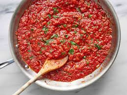

Home
Boppa's Tomato Sauce

Description
When I was a kid, we used to make the trek from New Hampshire to upstate New York to visit my grandfather.
He always liked to make fresh bread and his homemade tomato sauce, which we have always cherished in my family.
It wasn't until I was an adult that I finally coerced my aunt to share his recipe with me. And although it may
seem simple, the result is delicious red sauce that can be used in just about anything.
Ingredients
- 2 tsp Olive Oil
- 1 medium Onion, chopped fine
- 6 cloves garlic
- 2 28 oz cans Crushed Tomato
- 1 6 oz can Tomato Paste
- 2 tsp Basil
- 1/2 tsp Oregano
- 2 tsp Salt
- 1 tsp Pepper
- 1 Tbsp Sugar
- 2 Tbsp Chopped Parsley
Directions
- Heat oil over medium heat. Add onion and garlic and saute
until very soft. (10 mins)
- Add the rest of the ingredients and simmer for 1 hour, stirring
occasionally.
- Add parsley, stir, and cook for 5 more minutes